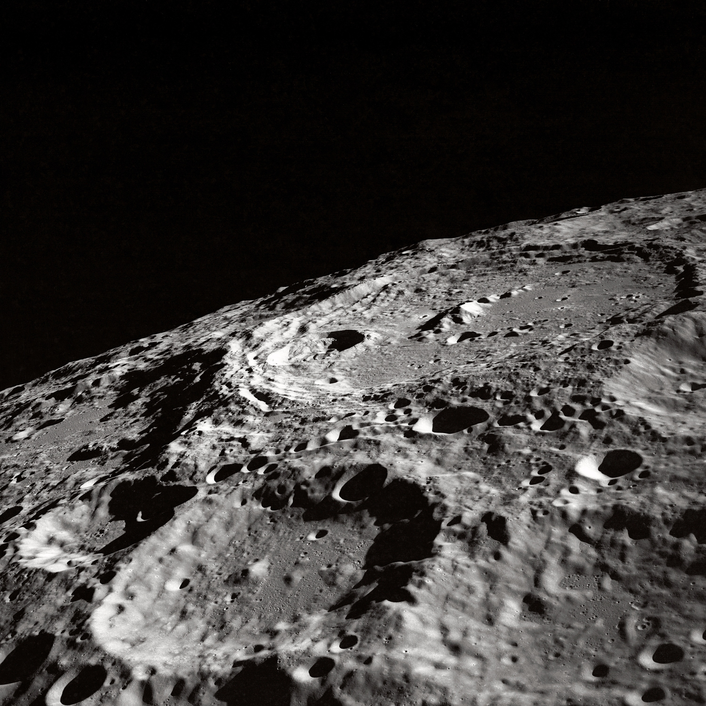

ダン・マイルドのプロフィールページ
Lover→ニナ・フレキシブル
年齢：34歳
職業：宇宙飛行士
階級：A級パイロット
メッセージ：Hi！俺の自己紹介にようこそ！宇宙旅行は当たり前になり、さらにはこどもたちは10人中9人が宇宙飛行士を夢見る時代になった。俺が宇宙飛行士を目指した理由は、実のところ様々なSF（スペース・サイエンス）小説でよくある胸の躍るような、スリル満点の旅に憧れたからさ。だけど宇宙には少なくとも人間に戦いを挑んでくるような生命体はまだ確認されてなくて、最近の俺の任務は冥王星に出張がせいぜい。ちょっとがっかりしたかい？だけどアストロノウツのいいところは大切な人を守れることだよ。あとは愛する人を月まで連れて行ってあげられる！ほら、フランク・シナトラの歌にもあるだろう？
2×××年 4月 マーズポートより 夢見るアストロノウツ ダン
プレイリスト：私を月まで連れてって! (Fly Me To The Moon!)
撮影したもの